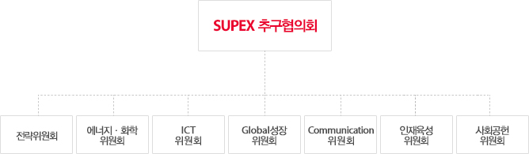
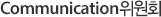

SUPEX추구협의회는 '따로 또 같이'의 효과적인 실행을 위하여 주요 관계사들이 체결한 상호협력방안 실행을 위한 ‘협약’에 기반하여, SK 그룹경영의 공식적인 최고 협의기구로서의 역할을 하고 있습니다. SUPEX추구협의회 산하에는 전략위원회, 에너지·화학위원회, ICT위원회, Global성장위원회, Communication위원회, 인재육성위원회, 사회공헌위원회 각 분야별로 전문화된 위원회를 운영함으로써, 관계사 간 집단지성과 상호협력을 더욱 활성화하며, ‘따로 또 같이’의 실행력을 제고하고 있습니다.

그룹 차원의 전략을 수립하고 실행을 지원합니다. 또한 그룹 차원의 성장기회를 발굴하고 투자하며 실행을 지원합니다.
에너지 · 화학위원회는 SK의 에너지 · 화학사업을 성장 · 발전시키기 위해 관계사의 성장을 지원하고 역량응집을 촉진합니다.
SK의 ICT사업을 성장 · 발전시키기 위한 유관 관계사 간 협력을 촉진합니다.
Global성장위원회는 SK의 글로벌 비즈니스 파트너들과 우호적인 협력관계를 만들며 에너지신산업을 추진합니다.

Communication위원회는 SK의 대내외 이해관계자들과의 원활한 커뮤니케이션 업무를 수행합니다.
인재육성위원회는 SK기업문화의 근간인 SKMS를 바탕으로 미래경영자를 발굴하고 육성하는데 집중하고 있습니다.
사회공헌위원회는 지속 가능한 행복을 만들고 나누기 위해 사회적 가치를 창출하고 Biz.파트너와의 동반성장에 힘씁니다.